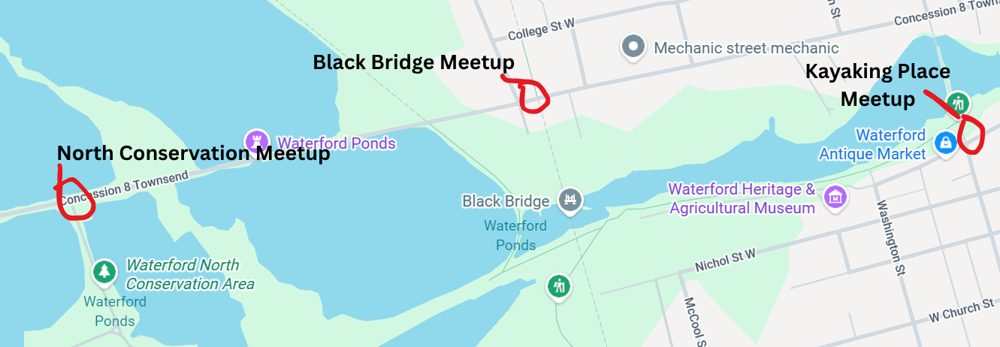

Your Cleanup Guide
Everything you need to know before joining us on the trails and waterways.
Cleanup Locations

North-Conservation Area, Black Bridge, and Waterford Kayaking Place
Cleanup Safety
- Make sure to stay with your group
- Watch your footing
- Don't Approach Wildlife
- Stay Hydrated
- Take Breaks when Needed